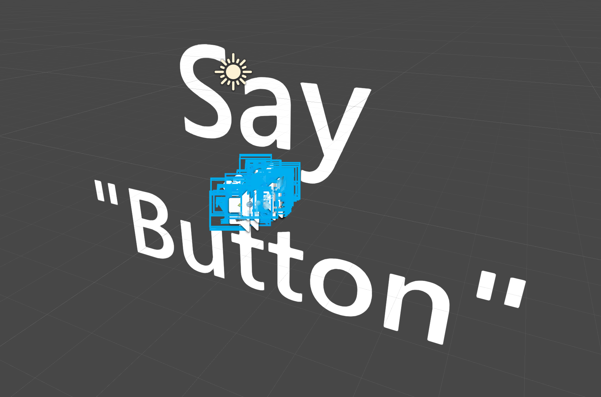
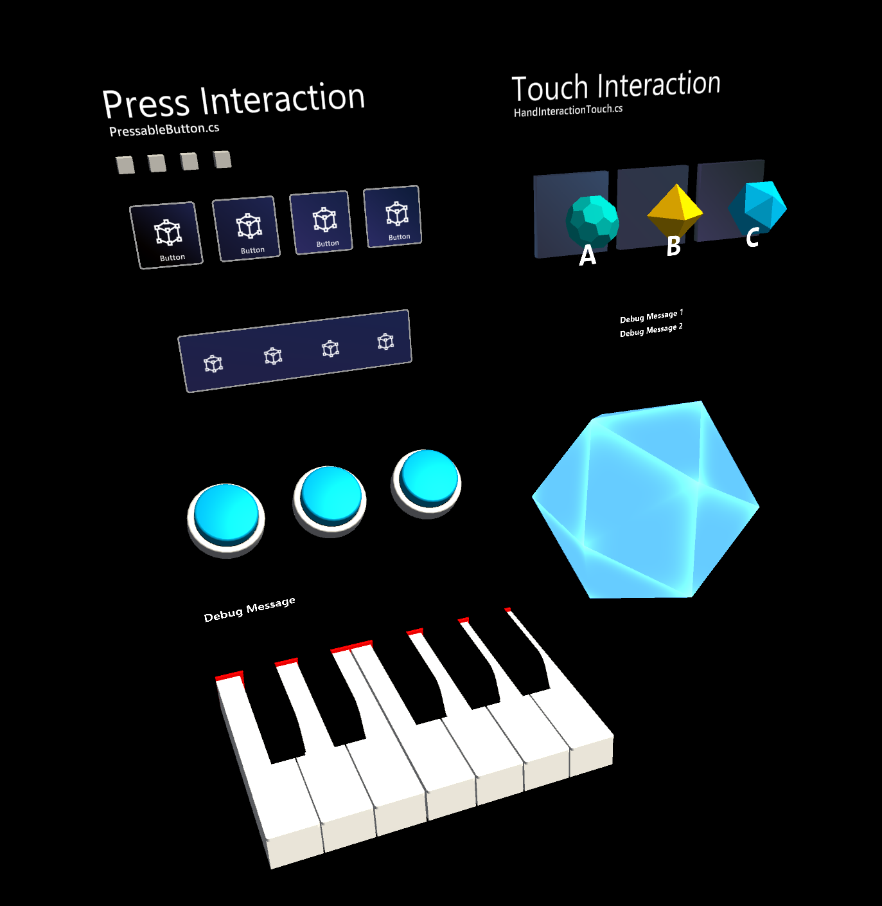
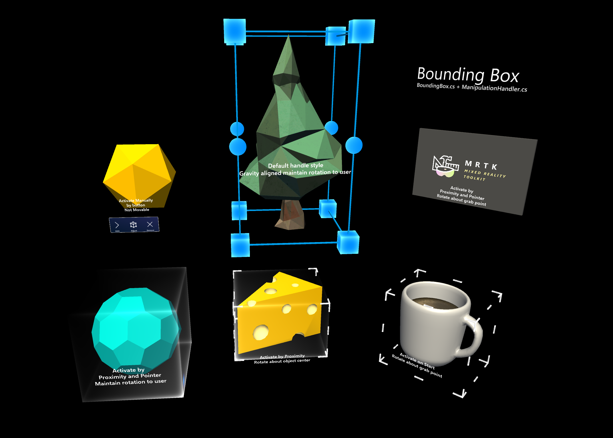
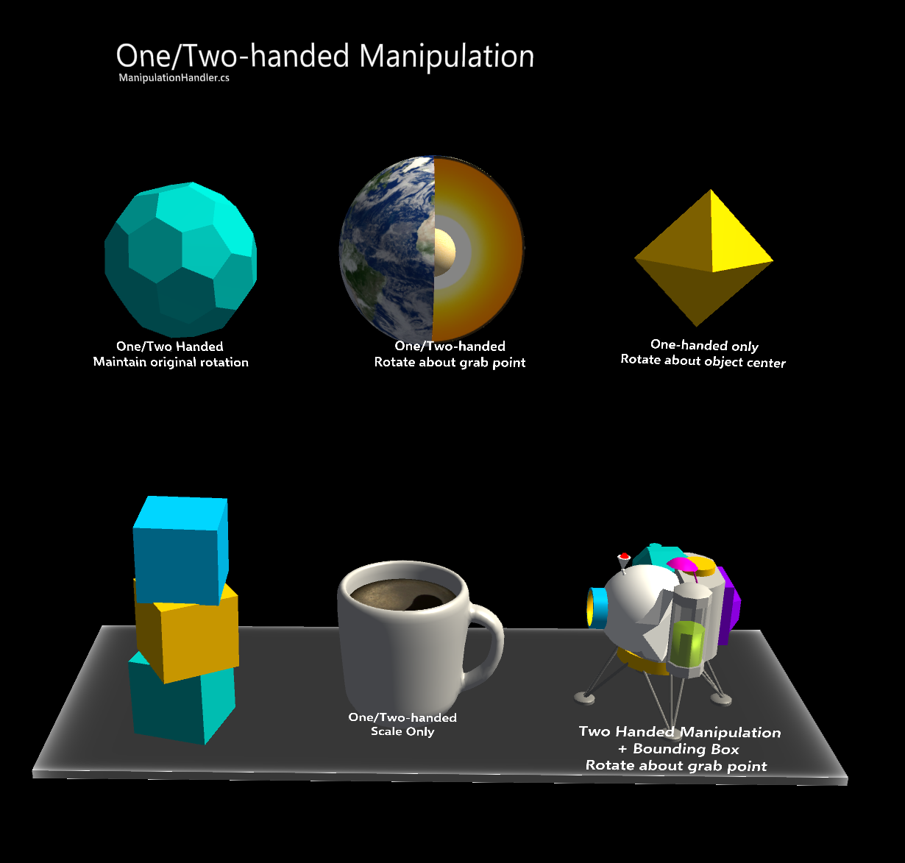
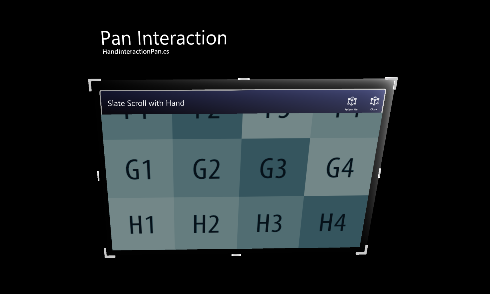
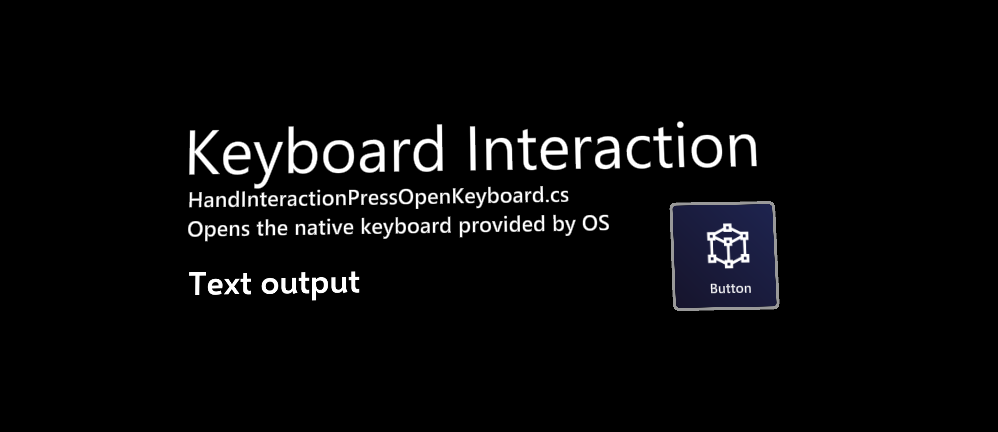

手势交互示例场景 Hand interaction examples scene

HandInteractionExamples.unity示例场景包含各种类型的交互和UI控件，突出显示了明确的手势输入。
Note
这个例子场景使用TextMesh Pro。在导入场景的过程中，当相应的提示出现时，点击*'Import TMP Essentials'*打开场景。然后Unity会导入TextMesh Pro包。
如果你在TextMesh Pro导入后看到大文本，打开另一个Unity场景，然后再次打开示例场景。
可按动按钮 Pressable button
详情请参阅按钮 页面。

边界框 Bounding box
详情请参见边界框页面。

Manipulation handler
详情请参阅manipulation handler 页。

Slate
详细信息请参见slate 页面。

系统键盘 System keyboard
详情请参阅系统键盘页。
